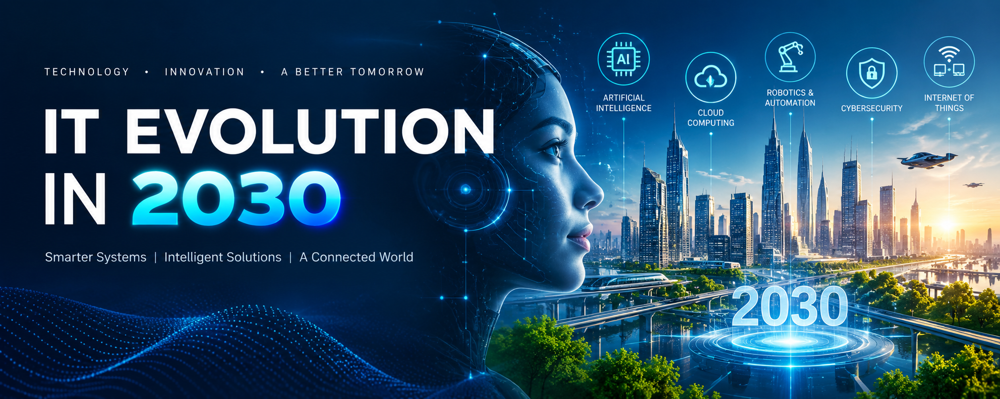

The IT industry is continuously changing with the development of new technologies. By 2030, technology may become more intelligent, automated, and deeply connected to everyday life. The IT field of 2030 may not be the same as today's IT industry. Artificial Intelligence, automation, robotics, cloud computing, cybersecurity, and advanced software systems could become major parts of the technology world
Artificial Intelligence may become one of the most important technologies by 2030. AI systems could perform many tasks that currently require human effort.
AI may reduce repetitive work while creating new opportunities for people who understand how to use and manage AI systems.
Software development may become faster because developers will have powerful AI coding assistants and automated development tools.
Robots may become more capable and intelligent by 2030.
The Internet of Things connects physical devices to the internet. By 2030, more everyday objects may become connected and intelligent.
The IT industry may create new roles while changing existing ones.
Technology skills alone may not be enough.
The IT field in 2030 could be faster, smarter, and more automated than it is today. Some traditional jobs may change, while completely new opportunities may appear. The most successful people may be those who continuously learn, adapt to technology, and combine technical knowledge with human abilities.
It is about innovation, creativity, problem-solving, and adapting to change.